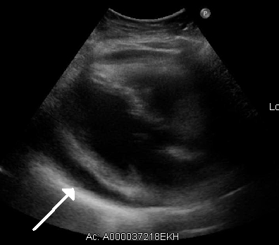

Ficha del catálogo
Derrame pericárdico
- Sistema
- Cardiovascular
- Modalidad
- US
- Región
- Tórax
- Dificultad
- Básico
Es la acumulación anormal de líquido en el saco pericárdico por encima de los pocos mililitros fisiológicos. Puede ser idiopático, infeccioso, neoplásico, urémico, posquirúrgico o secundario a enfermedades sistémicas. La repercusión clínica depende más de la velocidad de instauración que del volumen absoluto.
Técnica
El ecocardiograma es el método de elección por su rapidez, portabilidad y capacidad de valorar la repercusión hemodinámica. Se emplean las ventanas paraesternal, apical y subcostal, esta última especialmente útil en el paciente crítico. La tomografía y la resonancia caracterizan el líquido y el pericardio cuando el ultrasonido es insuficiente.
Qué observar
- Separación anecoica entre las hojas pericárdicas y su distribución
- Cuantificación aproximada del espesor en diástole
- Ecos internos, tabiques o material organizado dentro del derrame
- Colapso diastólico de aurícula derecha y ventrículo derecho
- Variación respiratoria exagerada de los flujos transvalvulares
- Vena cava inferior dilatada con escaso colapso inspiratorio
Hallazgos
Se observa un espacio libre de ecos que rodea el corazón y se separa del epicardio en sístole y diástole, con distribución habitualmente circunferencial. Los derrames organizados presentan ecos internos, bandas de fibrina o tabiques. En el taponamiento aparecen colapso de cavidades derechas, corazón oscilante y plétora de la vena cava inferior.
Perlas
El taponamiento cardiaco es un diagnóstico clínico y hemodinámico, no volumétrico: Un derrame pequeño instaurado en minutos puede comprometer el llenado, mientras que uno crónico y voluminoso puede tolerarse bien porque el pericardio tuvo tiempo de distenderse.
Diagnóstico diferencial
- Grasa epicárdica
- Es de localización anterior, algo ecogénica y se desplaza con el corazón sin rodearlo por completo.
- Derrame pleural izquierdo
- Se localiza por detrás de la aorta descendente en la proyección paraesternal larga, mientras el pericárdico queda por delante.
- Quiste pericárdico
- Es una colección localizada, de bordes definidos, típicamente en el ángulo cardiofrénico derecho y sin cambios agudos.
- Pericarditis constrictiva
- El pericardio está engrosado y a menudo calcificado, con septo interventricular en rebote y poco o ningún líquido.
Simuladores
- Almohadilla de grasa epicárdica anterior
- Derrame pleural izquierdo adyacente al corazón
- Seno pericárdico transverso prominente en tomografía
Por modalidad
- TC
- Mide la densidad del líquido, detecta calcificación pericárdica y valora causas torácicas asociadas.
- US
- Confirma el derrame, lo cuantifica y evalúa en tiempo real el compromiso hemodinámico.
Protocolo
Ecocardiograma transtorácico con ventanas paraesternal larga y corta, apical de cuatro cámaras y subcostal, midiendo el espesor máximo en diástole. Se añade Doppler de flujos mitral y tricuspídeo con registro respiratorio para valorar interdependencia ventricular. En tomografía se emplean cortes torácicos con contraste y ventana de mediastino.
Clasificación
Se gradúa por el espesor máximo en diástole en leve por debajo de 10 mm, moderado entre 10 y 20 mm y grave por encima de 20 mm. También se describe por distribución circunferencial o localizada y por características del contenido, simple u organizado.
Errores frecuentes
- Confundir grasa epicárdica anterior con derrame
- No distinguir derrame pleural izquierdo de derrame pericárdico
- Estimar taponamiento solo por el volumen sin valorar signos hemodinámicos

pericardio derrame taponamiento ecocardiograma colapso diastólico vena cava urgencia